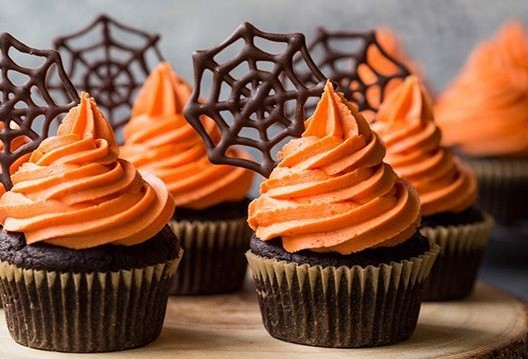

Cupcake Temático de Halloween
Um doce divertido e criativo para o Halloween! Macio, saboroso e com decoração assustadoramente deliciosa.

Ingredientes
Rende cerca de 12 unidades
Massa
- 2 ovos
- 1/2 xícara de óleo
- 1 xícara de leite
- 1 e 1/2 xícara de açúcar
- 2 xícaras de farinha de trigo
- 1/2 xícara de chocolate em pó
- 1 colher (sopa) de fermento
- Forminhas de papel para cupcake
Cobertura
- 200g de chantilly batido
- Corante alimentício laranja e roxo
- Granulados e confeitos temáticos (morcegos, abóboras, caveirinhas)
- Biscoitos Oreo para decorar como tumbas ou aranhas
Modo de Preparo
Tempo estimado: 40 minutos
- Em uma tigela, bata os ovos, o óleo, o leite e o açúcar até misturar bem.
- Adicione a farinha, o chocolate em pó e mexa até a massa ficar homogênea.
- Coloque o fermento e misture delicadamente.
- Distribua a massa nas forminhas de cupcake (até 2/3 da altura).
- Asse em forno pré-aquecido a 180 °C por cerca de 20 minutos.
- Deixe esfriar completamente antes de decorar.
Decoração
- Tinja o chantilly com corantes laranja e roxo e faça picos no topo dos cupcakes.
- Adicione granulados e confeitos para dar o efeito assustador.
- Use meio biscoito Oreo como “lápide” ou para criar aranhas.
- Faça carinhas de abóbora ou fantasminhas com chocolate derretido.
Dica do Chef: Sirva os cupcakes em caixinhas pretas ou laranjas para deixar ainda mais no clima de Halloween!